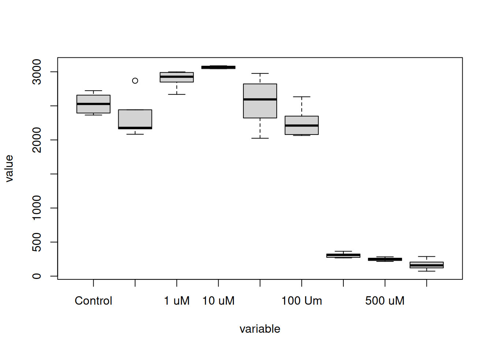
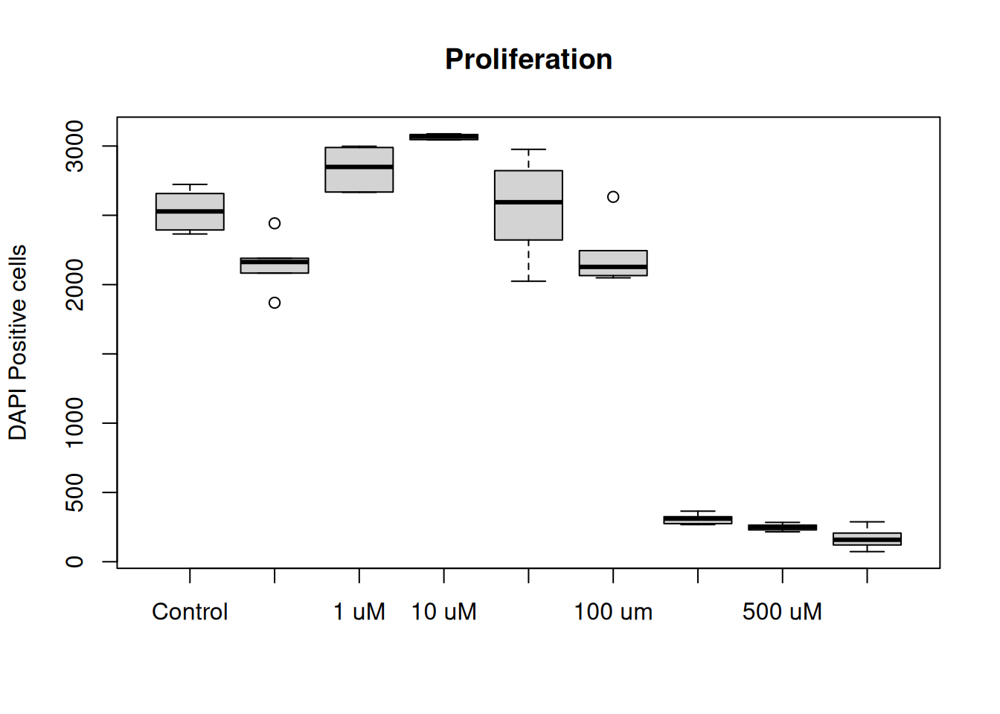
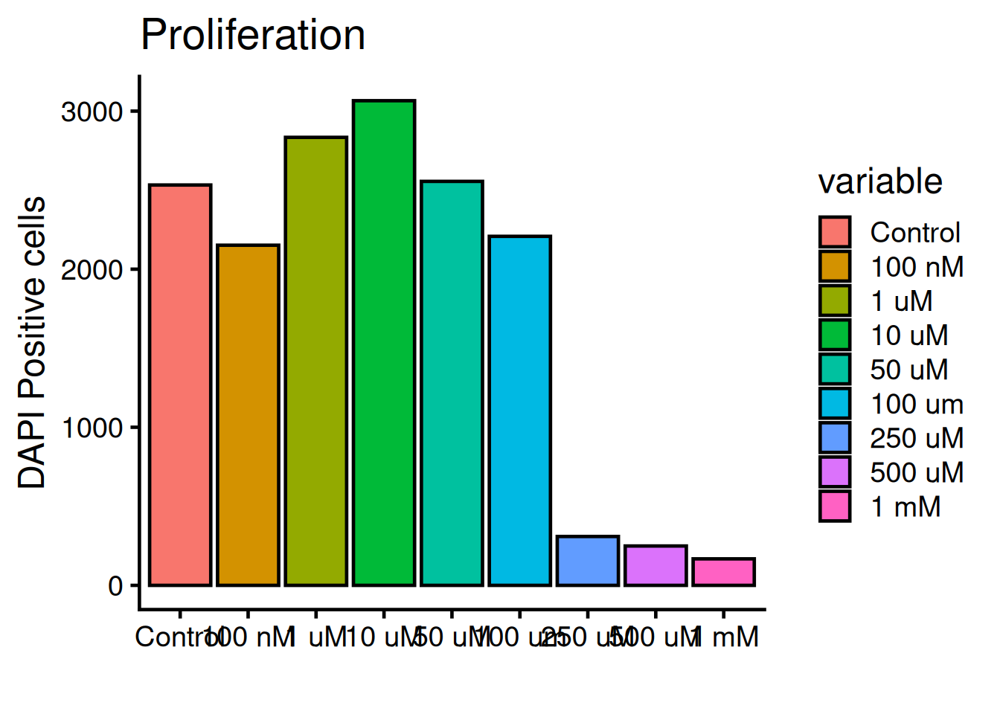
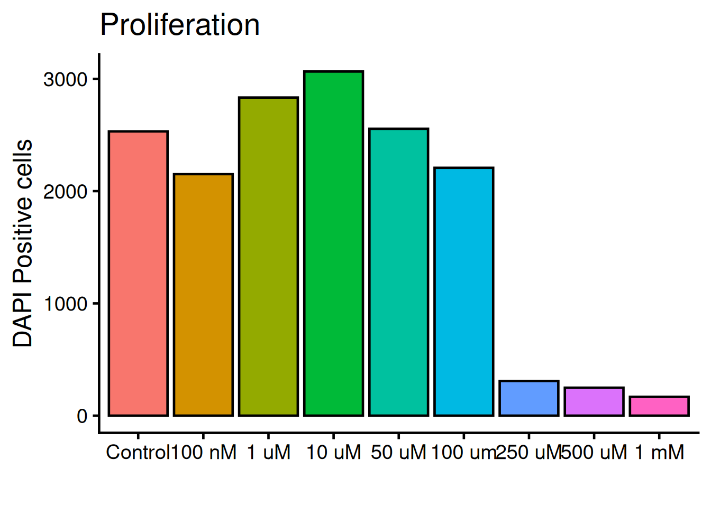
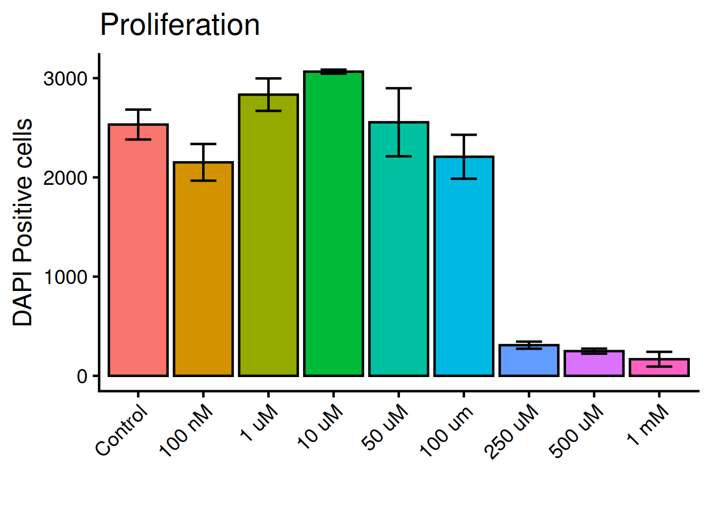

- 1
-
Install packages with
install.packages("<package-name>"), use quotes - 2
-
Load library with
library(<package-name>)
Analysis of Variance - ANOVA
Comparison of multiple group means
In the PFOS paper from 2018, PFOS in different doses and exposure times was applied and correlated with phenotypes such as proliferation, invation and migration. Here, we will reproduce the statistics and the figures for figure 1F and figure 3.
Proliferation
Figure 1F shows the proliferation phenotype over mulitple doses of PFOS. Proliferation is translated into how the cells are dividing by observing number of cell nuclei with a staining method called DAPI.
Import the dataset, will be contained inside a “data frame”, and inspect it with the head() and summary() functions:
# Import dataset
dat <- read.csv("../data/proliferation.csv")
# head shows the top 6 rows of a data frame
head(dat) variable value
1 Control 2723
2 Control 2613
3 Control 2657
4 Control 2443
5 Control 2365
6 Control 2394# summary shows ranges and types per column
summary(dat) variable value
Length:54 Min. : 73
Class :character 1st Qu.: 287
Mode :character Median :2170
Mean :1741
3rd Qu.:2659
Max. :3088
NA's :2
TipWhat can you read about the dataset?
The data frame is composed of 2 columns and 52 rows.
Lets make a simple plot!
The plot() function can read a data frame and recognice that the variable column is categorical and the value column is numeric. With this a box-plot figure is built where x = variable and y = value:
# Make variable column into factor (categorical)
# forcats::fct_inorder makes the categorices of the column the order they appear
dat$variable <- fct_inorder(dat$variable)
# Plot time!
plot(dat)
The plot function also takes in additional arguments, like main, ylab and xlab.
# main = title
# ylab = text on y-axis
# xlab = text on x-asis
plot(dat, main = "Proliferation", ylab = "DAPI Positive cells", xlab = "")
TipFunction arguments
All functions in R comes with documentation, where the function and all the arguments the function takes in are described. To open the documentation use the question mark ? before the name of the function, like ?plot will show:
plot package:base R Documentation
Generic X-Y Plotting
Description:
Generic function for plotting of R objects.
For simple scatter plots, ‘plot.default’ will be used. However,
there are ‘plot’ methods for many R objects, including
‘function’s, ‘data.frame’s, ‘density’ objects, etc. Use
‘methods(plot)’ and the documentation for these. Most of these
methods are implemented using traditional graphics (the ‘graphics’
package), but this is not mandatory.To exit the documentation, press q.
R comes with many packages to help customise plots. ggplot2 is the most popular one and builts on “layers” of geometic objects, called geom. The dataset is loaded via the ggplot() function and mapped via aesthetics (aes). Aesthetics contols x, y, outline colors, inside fill colors, sizes, shapes etc.
Lets style the plot with ggplot2! Run the code below:
# Ones per machine
#install.packages("ggplot2")
# Every R sessoin
library(ggplot2)
1ggplot(dat, aes(x = variable, y = value, fill = variable)) +
2 geom_bar(fun = "mean", stat = "summary", color = "black") +
3 theme_classic(base_size = 18) +
4 labs(
title = "Proliferation",
x = "",
y = "DAPI Positive cells")- 1
-
By adding a plus sign
+multiple rows are chained fo the plot - 2
-
geom_bar()uses the mean to calculate the top part of the bar - 3
-
theme_classic()is on of many themes for decorating a plot.base_sizesets the overall size. - 4
-
labs()holds arguments for text inputs for title, x-axis, y-axis, etc

The legend is not needed, remove it with theme(legend.position = "none"):
ggplot(dat, aes(x = variable, y = value, fill = variable)) +
geom_bar(fun = "mean", stat = "summary", color = "black") +
theme_classic(base_size = 18) +
1 theme(legend.position = "none") +
labs(
title = "Proliferation",
x = "",
y = "DAPI Positive cells")- 1
- legend.position is set to “none” and therefor not rendered. Default value is: legend.position = “right”

We need to add “whiskers” to the plot, which shows mean +/- standard deviation, i.e the variance. Use geom_errorbar:
ggplot(dat, aes(x = variable, y = value, fill = variable)) +
geom_bar(fun = "mean", stat = "summary", color = "black") +
geom_errorbar(
stat = "summary",
1 fun.min = function(x) mean(x) - sd(x),
2 fun.max = function(x) mean(x) + sd(x),
3 width = 0.4) +
theme_classic(base_size = 18) +
theme(legend.position = "none") +
labs(
title = "Proliferation",
x = "",
y = "DAPI Positive cells")- 1
- Bottom whisker
- 2
- Top whisker
- 3
- Width of whiskars
Tilt the x-axis text 45 degress. theme holds all arguments for the plots general appearence:
Tiptheme documentation
Check the doumentation: ?theme
Close with q.
ggplot(dat, aes(x = variable, y = value, fill = variable)) +
geom_bar(fun = "mean", stat = "summary", color = "black") +
geom_errorbar(
stat = "summary",
fun.min = function(x) mean(x) - sd(x),
fun.max = function(x) mean(x) + sd(x),
width = 0.4) +
theme_classic(base_size = 18) +
theme(
legend.position = "none",
1 axis.text.x = element_text(angle = 45, hjust = 1)) +
labs(
title = "Proliferation",
x = "",
y = "DAPI Positive cells")- 1
- hjust = right-justifed

Exercise
The colors of the actual figure does not match our colors. Can you match the colors?
TipHint 1
The attribute to alter is fill since these colors are inside the bars
TipHint 2
Use the scale_fill_manual() layer. Get more info of which arguments the layer takes with ?scale_fill_manual.
TipHint 3
Check the internet! stackoverflow.com is a platform which LLM’s are trained on.
Statistics
Lets compare the group means of the different doses to see if there is any significant differences! An Analysis of Variance (ANOVA) analysis will tells us if there is a difference between the tested groups, but not between which. For this we run a post-hoc (lat. after this) test. Since our tested groups are of unequal size we apply the Tukey-Kramer test. The group distribution can be seen with the table() function which builts a contingency table.
# Check group sizes
table(dat$variable)
Control 100 nM 1 uM 10 uM 50 uM 100 um 250 uM 500 uM 1 mM
6 6 6 6 6 6 6 6 6 , run ANOVA w/ Tukey Kramer posthoc test.
An ANOVA will tell us if there is a difference between the tested groups, but not between which. A posthoc
tests all pairwise comparison and
You want all pairwise comparisons while controlling family-wise error rate (FWER).
Why Tukey vs Tukey–Kramer Use Tukey’s HSD when:
You want all pairwise mean comparisons
Group sizes are equal (or nearly equal)
Use Tukey–Kramer when:
You want all pairwise mean comparisons
Group sizes are unequal (unbalanced design)
Tukey–Kramer is essentially Tukey’s method generalized to unequal n’s, keeping FWER controlled across all pairs.
NoteResources